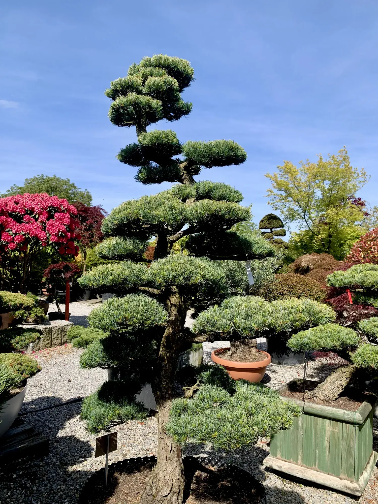
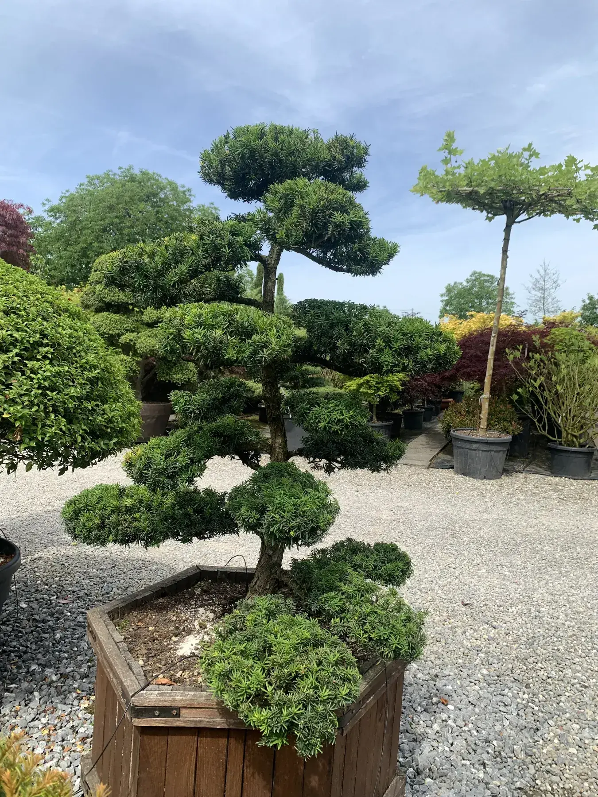

Послуги - Niwaki, японські клени і хвойні.
Три основні напрями: Niwaki, догляд за японськими кленами Acer palmatum і формування сосен та інших хвойних дерев.

Niwaki - садовий бонсай
Ручне формування дерев у саду. Завдання не зробити зелену стіну, а направити силу дерева туди, де вона створює форму, світло і довгий спокій.
Надіслати фото Niwaki
Японські клени
Сезонне формування, суха деревина всередині крони, ручна робота проти моху і грибкових ризиків. Крону треба відкривати до того, як проблема стане видимою.
Надіслати фото клена
Хвойні дерева - особливо сосна
Pinus, Taxus, Juniperus, ялиця і смерека. Робота виконується вибірково і вручну, щоб не зламати майбутню структуру дерева.
Надіслати фото сосниЩо сюди не входить.
Це не звичайне прибирання саду і не швидке підрівнювання живоплоту. Віктор працює з деревами, для яких важливі форма, здоров'я і довга перспектива.
Чому японські ножиці змінюють результат →Готові зрозуміти, чи можна врятувати дерево?
Надішліть фото дерева і проблемної зони. Віктор чесно скаже, чи має сенс виїзд і який підхід може допомогти.